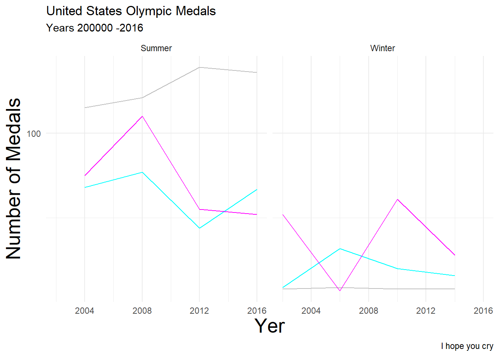

library(tidyverse)
library(here)Good Plot Bad Plot
Load Libraries
Load Data
For this assignment I chose a data set from the TidyTuesday data repository on GitHub. This specific data set looks at a variety of different statistics from the Olympic Games ranging from the years 1920-2016. For this specific assignment I chose to look at the results from just the United States from the years 2000-2016 to create a unique subsection of the data to work from.
olympics <- readr::read_csv('https://raw.githubusercontent.com/rfordatascience/tidytuesday/main/data/2024/2024-08-06/olympics.csv') #loading in the data from a TidyTuesday
lets_go_usa <- olympics %>% #renaming this filtered data
filter(team == "United States") %>% #filtering data to be just the United States
filter(year > 2000) #filtering the year to be past 2000 to have easier data to work with
head(lets_go_usa) # to look at the different columns# A tibble: 6 × 15
id name sex age height weight team noc games year season city
<dbl> <chr> <chr> <dbl> <dbl> <dbl> <chr> <chr> <chr> <dbl> <chr> <chr>
1 84 Stephen … M 26 165 55 Unit… USA 2004… 2004 Summer Athi…
2 145 Jeremy A… M 24 175 70 Unit… USA 2010… 2010 Winter Vanc…
3 145 Jeremy A… M 28 175 70 Unit… USA 2014… 2014 Winter Sochi
4 145 Jeremy A… M 28 175 70 Unit… USA 2014… 2014 Winter Sochi
5 149 Mara Kat… F 30 163 52 Unit… USA 2016… 2016 Summer Rio …
6 153 Monica C… F 23 191 88 Unit… USA 2008… 2008 Summer Beij…
# ℹ 3 more variables: sport <chr>, event <chr>, medal <chr>Now that we have the data that I want to use lets move on to making the plots.
Bad Plot
Starting with the Bad Plot, I used the data above to make the worst possibly plot I could that looked at the number of medals won by the united states from 2000-2016. Here is the following code that explains how I created the plot step-by-step.
lets_go_usa %>% #uses the filtered data
drop_na() %>% #gets rid of any Na's (there were a lot)
count(medal, year, season) %>% #groups the medals by year and then by season to create a new column with the value containing the number of each type of medal earned each year and season
ggplot(aes(x = year, y = n, color = medal)) + #creates a plot with year on the x axis, medals on the y, and making one line per medal type
geom_line() + #using a line plot because it's not continuous data
facet_grid(~season) + #creates two smaller graphs by the seasonal Olympic games the medal was earned in
scale_color_manual(values = c(
"Gold" = "grey",
"Silver" = "magenta",
"Bronze" = "cyan")) + #purposely choosing bad colors
scale_y_continuous(breaks = seq(0, 140, by = 100)) + #making the y axis suck so that its is poorly numbered
labs(title = "United States Olympic Medals",
subtitle = "Years 200000 -2016",
x = "Yer",
y = "Number of Medals",
caption = "I hope you cry") + #adding labels to my graph with some misspelling
theme_minimal() + #a perfect theme to make it worse
theme(axis.title.x = element_text(size = 20),
axis.title.y = element_text(size = 20), #changing the font size of the axis to be too large
legend.position = "none") #getting rid of the legend to make it confusing
ggsave(here("Good _Plot_Bad_Plot", "Output", "BadPlot.png")) #saves it to my output folder for this assignment

This beautiful abomination Figure 1 was made to try and convey the data as poorly as possible.
Here are the following ways I ensured that it would be as bad as possible:
used a line plot as this is a poor choice to illustrate non-continuous data across the years, a point or bar plot would be a better choice
chose to illustrate medal type with individual lines that don’t have a legend to tell which is which
chose poor colors for the lines that are hard to look at and don’t give any insight into the medal type, this purposely makes the plot misleading as the viewer can’t know what they’re looking at with the plot alone
chose a theme that would make certain line colors hard to see
had poor numbering on the y-axis to make it hard to determine the value of medals at each year
created too large of font and misspelling on the axis, making the spacing off
had incorrect and misleading information on the year range within the sub-caption
Good Plot
Moving onto the Good Plot, I used the same dataset to make the best graph I could to represent the same data as the Bad Plot. Here is the code that I used to make this plot.
lets_go_usa %>% #uses the filtered data
drop_na() %>% #drops any NA's
mutate(medal = factor(medal, levels = c("Gold", "Silver", "Bronze"))) %>% #changes the medal column from characters to variables, also creates the order they are stacked across the x axis
ggplot(aes(x = year)) + #making year the x axis
geom_bar(aes(fill = medal), position = "dodge") + #creates a bar graph with the bars filled by medal type and the dodge prevents medal types from stacking creating an individual bar per medal type
facet_grid(~season) + #creates two smaller graphs by Olympic Game season
scale_fill_manual(values = c(
"Gold" = "#FFD700",
"Silver" = "#C0C0C0",
"Bronze" = "#CD7F32")) + #matching medals with the corresponding color
scale_x_continuous(breaks = seq(2000, 2016, by = 4)) + #adjusting the x axis to be labeled by every 4 years, 2 years made it too crowded
scale_y_continuous(breaks = seq(0, 140, by = 20)) + #adjusted the y axis to be labeled by every 20
labs(title = "United States Olympic Medals",
subtitle = "Years 2000-2016",
fill = "Medal Type",
x = "Year",
y = "Medals Won") + #changed the titles of everything to make sense
theme_bw() + #added a nice theme
theme(axis.title.x = element_text(size = 12),
axis.title.y = element_text(size = 12)) #changed the font size of the axis to be more readable
ggsave(here("Good _Plot_Bad_Plot", "Output", "GoodPlot.png")) #saves it to my output folder for this assignment
Within Figure 2 I tried to do the opposite of everything in Figure 1 to best visualize the data.
Here are the following ways I corrected the mistakes of Figure 1 to make as good of a graph as I could:
used a bar graph as this helps to clearly visualize how many of each type of medal was won each year for the Olympic Games by medal type
individual bars are colored to match the type of medal that they are and have a legend to help drive this point home
plot is faceted by Olympic game type so to emphasize differences while reducing how crowded the bars are
numbering on the axis are properly spaced so that it is easy to interpret the values for both
axis, titles, and legends are properly labeled to clearly explain each
sizes of titles are appropriate so the viewer can easily read and understand them
theme adds to the aesthetic without negatively impacting how easy it is to interpret the plot